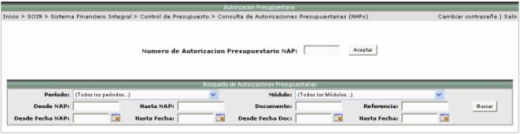

En esta consulta se presentan una serie de filtros, para que el usuario los utilice en la búsqueda de información:

Una vez seleccionado el
filtro deseado se presiona el botón  y se presentará la siguiente pantalla con los registros encontrados:
y se presentará la siguiente pantalla con los registros encontrados:

Si se quiere ver información detalla de un NAP, solamente basta con seleccionar el registro deseado y se mostrará una pantalla como la siguiente, con información del documento original, del documento de aprobación, entre otras: